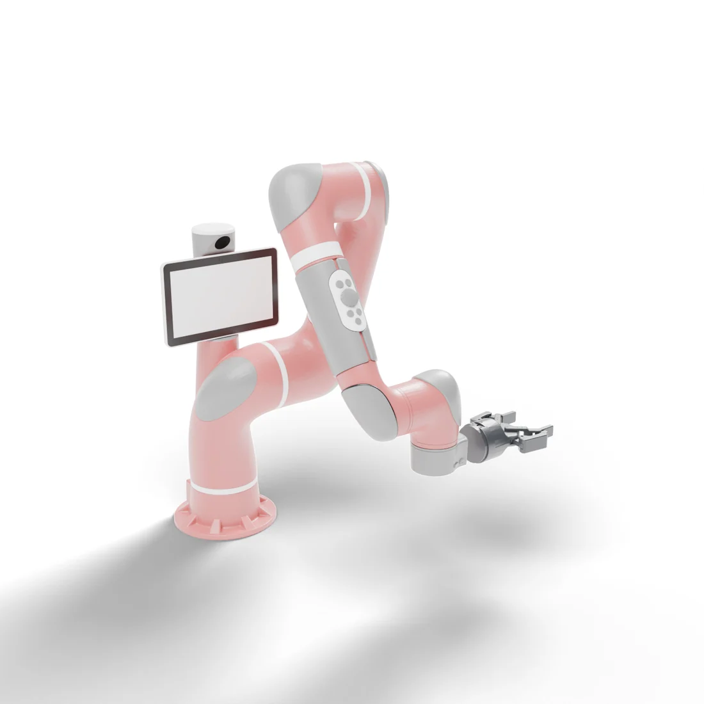

Move Pan
Lift the pan off the hot plate and set it down on the mat.
DexSuite brings the robot, the tasks, teleoperation, tactile sensing, the data and the evaluation into one stack. Any of its tasks runs with any arm and any hand.
Robots
Robots that come with their own gripper run every task as they are.





Track 1
Tasks are defined once, with the same reset, observations and success check for a gripper and a hand. Here, two recorded human demonstrations of Pick & Place.
Track 2
Lift the pan off the hot plate and set it down on the mat.
Pick up the mug, place it in the rack and let go.
Pick up the drill and align its tip with the target.
Put the apple and the lemon into the bowl, one after the other.
Stand the slice in a toaster slot and push the lever down.
Teleoperation
Plug in a device and drive any robot. The arm follows a SpaceMouse, an HTC Vive or Meta Quest controllers, and finger motion from a webcam, a Leap Motion, Quest hand tracking or a Manus glove is mapped to whichever hand is mounted.
Arm
Fingers
Hand mapping
Dataset
Every one of the 16 benchmark task-embodiment pairs, recorded at 20 Hz with front and wrist cameras, proprioception and object states, in LeRobot format with an HDF5 export for robomimic.

Benchmark
Policies trained and evaluated on the Allegro hand match or outperform their gripper counterparts on several shared tasks.
Best success rate (%) of five imitation learning baselines per task and embodiment, three seeds with 50 episodes each.